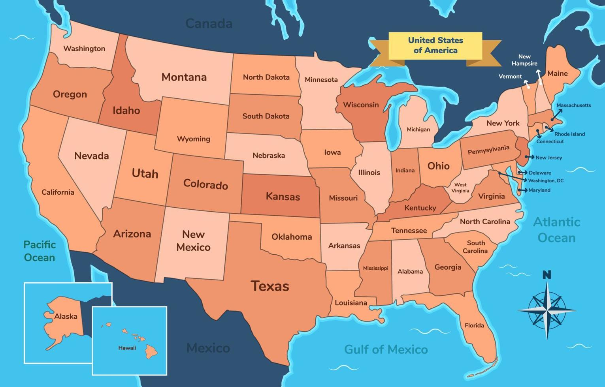
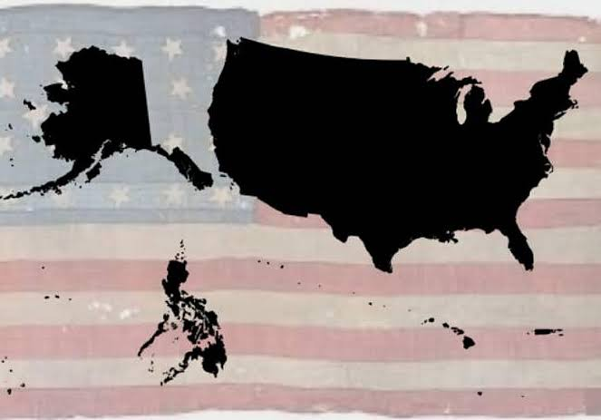
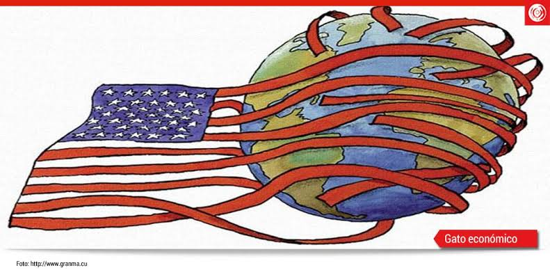

Fragmentación interna
El análisis considera que la caída del Imperio Español fue el resultado de un proceso histórico prolongado y de conflictos entre diferentes potencias.
Análisis histórico y geopolítico
La fragmentación del Imperio Español y el desafío contemporáneo de Hispanoamérica
Este sitio presenta un análisis histórico y geopolítico sobre la fragmentación del Imperio Español y sus consecuencias en Hispanoamérica.
El documento plantea que la fragmentación de la Monarquía Hispánica estuvo relacionada con conflictos geopolíticos, económicos, culturales y con la influencia de potencias externas.
El análisis considera que la caída del Imperio Español fue el resultado de un proceso histórico prolongado y de conflictos entre diferentes potencias.
El documento plantea que Inglaterra utilizó estrategias de inteligencia, influencia política y subversión para debilitar el poder español.
Según el material, determinadas élites locales participaron en los procesos que llevaron a la fragmentación política.
El documento presenta una interpretación crítica del papel de algunas figuras de las independencias hispanoamericanas.
El análisis interpreta las independencias como procesos relacionados también con intereses económicos y geopolíticos externos.
El Real de a 8 es presentado como una moneda global respaldada en plata durante la época imperial.
El documento menciona el Quinto Real, equivalente al 20 % de la minería, y su relación con la financiación de servicios e infraestructura.
Después de la independencia, el material señala el surgimiento de sistemas económicos caracterizados por monedas nacionales y deuda externa.
El análisis relaciona la etapa posterior a las independencias con una mayor dependencia financiera de potencias y bancos extranjeros.
El documento compara diferentes modelos de aprovechamiento de recursos naturales y señala problemas relacionados con la dependencia externa.
El documento considera el mestizaje como uno de los elementos centrales de la identidad hispana.
Se destaca la tradición católica como parte de la cultura histórica de Hispanoamérica.
La fe es presentada en el documento como un elemento capaz de generar vínculos culturales entre diferentes pueblos.
El análisis plantea la importancia de una visión trascendente para desarrollar proyectos de largo plazo.
El documento cuestiona el abandono de elementos tradicionales de la identidad cultural hispana.
Venezuela es utilizada como ejemplo para analizar las dificultades políticas, económicas y geopolíticas de la región.
El documento analiza la relación entre Hispanoamérica y Estados Unidos dentro del escenario geopolítico contemporáneo.
China y Rusia aparecen como actores importantes dentro de la competencia geopolítica actual.
El documento recuerda las antiguas relaciones comerciales entre España y China y propone considerar nuevas oportunidades de intercambio.
Se plantea una mayor unidad económica y cultural como estrategia para mejorar la capacidad de negociación internacional.
El documento propone superar determinadas interpretaciones negativas de la propia historia hispanoamericana.
Se plantea recuperar elementos culturales y espirituales como parte de una visión de futuro.
Hispanoamérica podría aprovechar sus relaciones históricas y culturales para establecer vínculos estratégicos con diferentes potencias.
La propuesta final apunta hacia una unión económica, cultural y aduanera moderna.
| Evento | Región | Actor | Consecuencia |
|---|---|---|---|
| Caída del Imperio Español | Hispanoamérica | Inglaterra y élites criollas | Fragmentación territorial y política. |
| Real de a 8 | Nueva España | Imperio Español | Moneda global respaldada en plata. |
| Revolución de Mayo | Río de la Plata | Inglaterra y revolucionarios locales | Apertura de puertos al comercio británico. |
| Guerra de los Pasteles | México | Francia | Intervención militar y presión política. |
| Crisis actual de Venezuela | Venezuela | EE. UU., Rusia y China | Disputa geopolítica regional. |
Imágenes relacionadas con los diferentes temas estudiados.



Video relacionado con el tema de la investigación.
El análisis presentado aborda la fragmentación del Imperio Español desde una perspectiva histórica, económica, cultural y geopolítica.
Como propuesta de futuro, el documento plantea una mayor unidad económica, cultural y aduanera de Hispanoamérica para fortalecer su posición frente a las potencias internacionales.